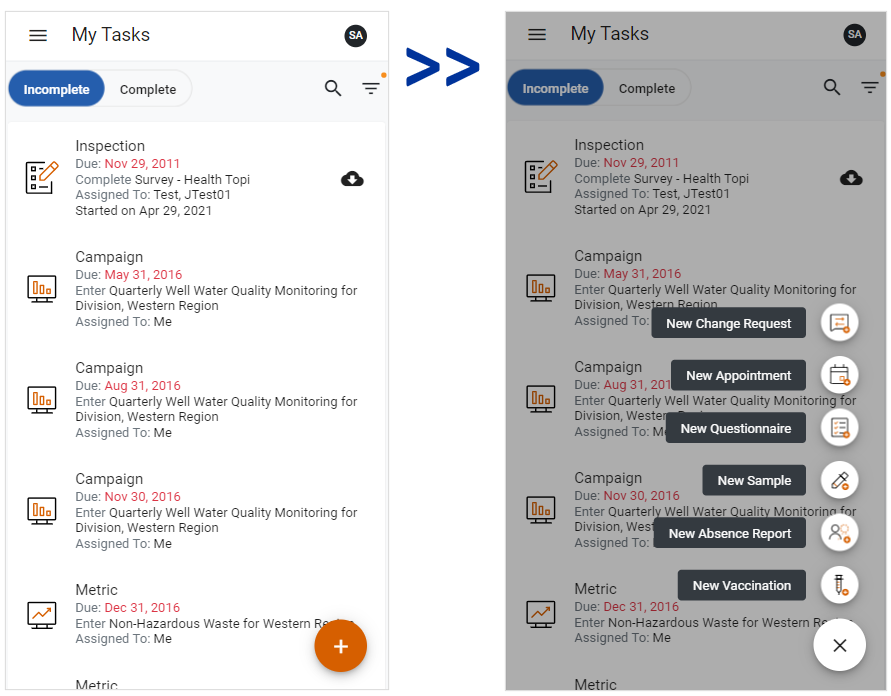

At the bottom right corner of the My Tasks and Event Reports screens there is a Create New button. When clicked, the Create New button will allow you to create a new change request, appointment, questionnaire, sample, or absence report (if you are in My Tasks), or event report (if you are in Event Reports).
The Create New button will not display if there are no questionnaires or samples in myCority and the Appointments module is disabled.
